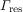
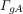
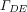

- EasySpin
- Documentation
- Publications
- Website
- Academy
- Forum
Calculation of field-swept and frequency-swept solid-state cw EPR spectra for powders and crystals.
pepper(Sys,Exp); pepper(Sys,Exp,Opt); spec = pepper(...); [B,spec] = pepper(...); [B,spec,Trans] = pepper(...);
See also the user guide on how to use pepper.
pepper calculates cw EPR spectra for powders, frozen solutions and single crystals. It
can calculate both field-swept and frequency-swept spectra.
There are up to three possible output arguments.
pepper plots the simulated spectrum.
spec contains the calculated spectrum or spectra.
x is a vector of magnetic field values over which the spectrum was calculated, in units of mT.
For frequency-swept spectra, x is a vector of microwave frequency values over which the spectrum was calculated, in units of GHz.
Trans is a list of level number pairs indicating the transitions which where included in the spectrum calculations. Level numbers refer to the energy levels of the Hamiltonian in ascending order, so level 1 is that which lowest energy and so on. If spec is a matrix, spec(k,:) is the spectrum of the transition Trans(k,:).
There are three inputs to the function, the last one optional. They are similar to those of resfields.
Sys is a spin system structure containing the spin Hamiltonian parameters and the line broadening parameters.
For simulating a multi-component mixture, Sys should be a cell array of spin systems, e.g. {Sys1,Sys2} for a two-component mixture. Each of the component spin systems should have a field weight that specifies the amount of the corresponding component in the final spectrum. weight is an absolute, not a relative, weight. It is proportional to the number of spins. If weight is missing, it is set to 1.
Exp contains standard experimental parameters such as the microwave frequency, the magnetic field range and temperature. See here for a full list. Beyond these standard fields, pepper supports the following additional fields.
Temperature
Thermal equilibrium:
Temperature is the temperature of the spin system in the EPR experiment, in kelvin. E.g., Exp.Temperature = 298 corresponds to room temperature. If given, populations are computed for all energy levels assuming thermal (Boltzmann) equilibrium, and the population differences between two levels are included in the line intensities of the corresponding EPR transition. If not given (or set to NaN), the populations are not calculated, and all transitions are assumed to have equal population difference of 1.
Non-equilibrium populations:
Temperature can also be used to specify non-equilibrium populations. For a spin system with N electron states (e.g. 4 for a biradical, 3 for a triplet state), it must be a vector with N elements giving the populations of the zero-field electron states, from lowest to highest in energy.
E.g., if Exp.Temperature = [0.85 0.95 1.2] for an S=1 system, the population of the lowest-energy zero-field state has a population of 0.85, the middle one has 0.95, and the highest-energy zero-field state has a population of 1.2. If there are coupled nuclei, the populations of all nuclear sublevels within each electron spin manifold are assumed to be equal.
mwPolarization'linear' (default), 'circular+', 'circular-', 'unpolarized'. 'circular+' ('circular-) means that the magnetic field component of the radiation is rotating in the positive (negative) sense around the propagation direction.
Mode'perpendicular' (default), 'parallel', [k_tilt alpha_pol], k_tilt.
Resonator experiments:
For conventional experiments involving linear polarized microwave in a standard resonator, use 'perpendicular' (default) or 'parallel'. In the perpendicular mode, the microwave field B1 is along the laboratory x axis (xL), in the parallel mode it is along the z axis (zL), parallel to the external static field B0. The perpendicular detection mode is by far the most common.
Beam experiments:
For beam experiments, specify the angle between the propagation vector k and the static magnetic field B0 in k_tilt, in radians. k_tilt = 0 corresponds to Faraday geometry, where B0 and k are parallel. k_tilt = pi/2 corresponds to Voigt mode, where B0 and k are perpendicular. B0 is along the laboratory z axis (zL), [0; 0; 1] in the lab frame. Together, B0 and k define the zL-yL plane, where yL is the laboratory y axis.
For linearly polarized mw irradiation, you need to also give alpha_pol, the polarization angle of the radiation. alpha_pol is the angle between B1 and the intersection of the zL-yL plane and the plane perpendicular to the propagation vector k. alpha_pol is only allowed for linearly polarized excitation (Param.mwPolarization = 'linear').
In the lab frame, the direction of propagation is
nk = [0; sin(k_tilt); cos(k_tilt)]and the direction of the linearly polarized B1 field is
nB1 = [sin(alpha_pol); -cos(alpha_pol)*cos(k_tilt); cos(alpha_pol)*sin(k_tilt)]
CrystalOrientationCrystalOrientation contains the three Euler rotation angles that transform the crystal frame (C) to the lab frame (L). If only two Euler angles are given, the third is set to zero. If CrystalOrientation is empty or not specified, the full powder spectrum is computed.
Exp.CrystalOrientation = [0 0 0]; % single crystal, crystal z axis aligned with B0 Exp.CrystalOrientation = [0 pi/2 0]; % single crystal, crystal z axis perpendicular to B0 Exp.CrystalOrientation = [0 0 0; 0 pi/2 0]; % two crystals Exp.CrystalOrientation = []; % powder
CrystalSymmetry'P212121' or 'Ia-3d'), or the symbol for the point subgroup of the space group (in either Schönflies or Hermann-Mauguin notation, such as 'D2h' or 'mmm').
Exp.CrystalSymmetry = 11; % space group number (between 1 and 230) Exp.CrystalSymmetry = 'P21/c'; % space group symbol Exp.CrystalSymmetry = 'C2h'; % point group, Schönflies notation Exp.CrystalSymmetry = '2/m'; % point group, Hermann-Mauguin notation
When CrystalSymmetry is given, all symmetry-related sites in the crystal are generated and included in the calculation. If CrystalSymmetry is not given, space group 1 (P1, point group C1, one site per unit cell) is assumed.
MolFrameParam.MolFrame=[0,pi/4,0] tilts the x and z axis of the spin system's molecular frame (xM, zM), relative to the crystal frame (xC,yC,zC).
Ordering
scalar (default: zero) or function handleIf a number is given in this field, it specifies the orientational distribution of the paramagnetic molecules in the sample. If not given or set to zero, the distribution is isotropic, i.e. all orientations occur with the same probability.
If it is given, the orientational distribution is non-isotropic and computed according to the formula P(θ) = exp(-U(θ)) with U(θ) = -λ(3 cos2θ - 1)/2), where θ is the angle between the molecular z axis and the static magnetic field, and λ is the number specified in Exp.Ordering.
Typical values for λ are between about -10 and +10. For negative values, the orientational distribution function P(θ) is maximum at θ = 90° (preferential orientation in the molecular xy plane), for positive values at θ = 0° and θ = 180° (preferential alignment along the molecular z axis). The larger the magnitude of λ, the sharper the distributions.
To plot a distribution depending on λ, use
lambda = 5; theta = linspace(0,pi,1001); U = -lambda*plegendre(2,0,cos(theta)); P = exp(-lambda*U); plot(theta*180/pi,P);
If Exp.Ordering is a function handle, pepper will use the user-supplied function to obtain the orientational distribution. It calls the function with two vector arguments, phi and theta (in radians). The function must return a vector P containing probabilities for each orientation, that is P(k) is the probability of finding the paramagnetic molecules with orientation specified by phi(k) and theta(k). Here is an example with an anonymous function:
Exp.Ordering = @(phi,theta) gaussian(theta,0,15/180*pi);
Of course, the function can also be written and stored in a separate file, e.g. myori.m. Then use Exp.Ordering = @myori.
When using a custom orientational distribution, make sure that the symmetry used in the simulation corresponds to the symmetry of the distribution. If the distribution is very narrow, increase the number of knots in the options structure.
mwFreq (for field sweeps) and Field (for frequency sweeps) have to be provided by the user. All other fields are optional and have default values. Often, EasySpin can determine the sweep ranges automatically from the given spin system and fixed mw frequency or static field.
The structure Opt collects computational parameters. Opt need not be specified, in which case default values for all fields are used. The field names and their possible values are listed below.
Method
'matrix' (default), 'perturb', 'perturb1', 'perturb2', 'hybrid'
Determines the level of theory pepper uses to compute the resonance fields (for field sweeps) or frequencies (for frequency sweeps).
'matrix' indicates matrix diagonalization. This method is very reliable and accurate and works for spin systems with any number of spins. All interactions, including quadrupole, are included in the computation.
'perturb1' indicates first-order perturbation theory, and 'perturb' or 'perturb2' indicates second-order perturbation theory. These methods ares limited to spin systems with one electron spin 1/2 (and possibly some nuclei). In addition, nuclear Zeeman and nuclear quadrupole terms are neglected, and only allowed transitions are computed. For multi-nuclear spin system, cross-nuclear effects are neglected as well. The resulting spectrum is reasonably correct only for small hyperfine couplings (e.g. organic radicals).
'hybrid' indicates matrix diagonalization for all the electron spins, and perturbation treatment for all nuclei, using effective nuclear sub-Hamiltonians for each electron spin manifold. This method is advantageous for high-spin systems with significant zero-field splitting, but only small hyperfine couplings. If some nuclei have large hyperfine couplings that need to be treated exactly, they can be specified in the field HybridCoreNuclei.
'matrix' is the method of choice for systems with only a few low-spin nuclei (and any number of electron spins). For spin systems with many nuclei and small hyperfine couplings, simulations using perturbation theory are orders of magnitude faster. 'hybrid' is the method of choice for systems with several large electron spins coupled to several nuclei such as in oligometallic clusters.
HybridCoreNuclei
array of nucleus indicesOpt.Method='hybrid'. If not given, it is set to [], and all nuclei are treated perturbationally.
Here is an example:
Sys.Nucs = '63Cu,14N,1H'; Opt.Method = 'hybrid'; Opt.HybridCoreNuclei = [1]; % 63Cu is treated exactly, 14N and 1H perturbationally Opt.HybridCoreNuclei = [1 2]; % 63Cu and 14N are treated exactly, 1H perturbationally Opt.HybridCoreNuclei = []; % all nuclei are treated perturbationally
Output
'summed' (default) or 'separate''separate', pepper returns one spectrum for each transition in a matrix spec. The transition spectra are along the rows, so spec(k,:) is the spectrum of transition k. If 'summed' is specified, the total spectrum is returned in spec as a vector.
For crystal simulations, 'separate' means something different: If given, pepper returns each crystal orientation (and not each transition) separately.
Verbositypepper prints to the command window. If Opt.Verbosity=0, pepper is silent. 1 logs relevant information, 2 gives more details.
nKnots, [N1] or [N1 N2]N1 gives the number of orientations between θ=0° and θ=90° for which spectra are explicitly calculated using the physical theory. Common values for N1 are between 10 (10° increments) and 91 (1° increments). The larger the anisotropy of the spectrum and the narrower the linewidth relative to the anisotropy, the higher N1 must be to yield smooth powder spectra.
N2 is the refinement factor for the interpolation of the orientational grid. E.g. if N2=4, then between each pair of computed orientations three additional orientations are calculated by spline interpolation. Values higher than 10 are rarely necessary. If N2 is not given, a default value is used.
Opt.nKnots = 91; % 1° increments, no interpolation Opt.nKnots = [46 0]; % 2° increments, no interpolation Opt.nKnots = [31 6]; % 3° increments, 6-fold interpolation (giving 0.5° increments)
Transitions, mx2 vector of integers, or 'all'pepper uses them and skips its automatic transition selection scheme. Level pairs are specified in Transitions(k,:) by the level numbers which start with 1 for the lowest-energy level. If 'all' is given, then all transitions are included.
Opt.Transitions = [1 6; 2 5]; % include only transitions 1->6 and 2->5
SitesOpt.Sites is empty or not given, all sites are included. If given, it must be a list of site numbers. The number of sites depends on the space group given in Exp.CrystalSymmetry. E.g. the following set limits the simulation to sites 1 and 3 of the 4 magnetically distinct sites in crystal of space group no. 47.
Exp.CrystalSymmetry = 47; % space group Pmmm Opt.Sites = [1 3];In powder simulations,
Opt.Sites is ignored.
Thresholdpepper's transition pre-selection. Any transition with an estimated relative average amplitude less than this number is not included in the calculation. The relative average amplitude of the strongest transition is 1, the default is 1e-4. The pre-selection is an approximate procedure, and it might miss transitions for complicated spin systems. In these cases, setting it to zero will include all transitions in the computation.
Symmetry, 'auto' (default), 'Dinfh', 'D2h', 'C2h' or 'Ci'
'Dinfh' corresponds to a line from θ=0° to &theta=90° (with φ=0°), 'D2h' to one octant, 'C2h' to two octants, and 'Ci' to one hemisphere (four octants). auto is the default, meaning that pepper determines the correct symmetry automatically from the given spin system. With any other setting, pepper is forced to use the specified symmetry, even if it is not optimal or incorrect for the spin system. See also symm.
Intensity,
'on' (default) or 'off'
'on', transition rates, i.e. line intensities, are computed correctly. Allowed transitions will be more intense then quasi-forbidden ones. 'off' simply sets all transition rates of all transitions to 1. Allowed and forbidden transitions will have the same intensity. Be very careful when switching this option to 'off'! The resulting spectra are not correct.
Freq2Field, 1 (default) or 0
1 indicates yes, 0 indicates no. The factor is the generalized 1/g Aasa-Vänngård factor. Freq2Field should never be changed from its default 1. This setting is ignored for frequency-swept spectra.
IsoCutoffIsoCutoff is excluded. The default value is 1e-4.
Spectra are calculated over a triangular orientational grid using resfields, resfields_perturb, resfreqs_matrix, resfreqs_perturb to obtain the resonance line positions and line amplitudes. For each orientation, line positions, and possibly widths and intensities, are evaluated.
This gridded data is then interpolated with cubic splines in a combined 1D/2D approach. Resampling of the spline surface gives much quicker many more position/intensity/width data than quantum-mechanical calculation.
Finally, the refined data are projected onto the magnetic field axis using a Delaunay triangulation of the resampled spline surfaces. Linear interpolative projection of these triangles yields a smooth spectrum with very low powder simulation noise. In the case of full anisotropic width treatment, a simple sum-up of Gaussian line shapes is used instead of the projection.
Apart from the main steps above, there is an automatic transition selection, which works along the same line as the overall algorithm, except that its results are only used for determining which level pairs possibly contribute to the spectrum.
For line width calculations, Gaussian distributions are assumed both in the magnetic field and the frequency dimension. The overall line width for a given orientation is
where  is the residual line width
specified in Sys.HStrain,  is
the line width due to correlated g-A strain (Sys.gStrain and Sys.AStrain),
and  the width arising from D-E strain
(Sys.DStrain).
Although quite robust and general, pepper still has some limitations.
Opt.nKnots.
Opt.nKnots.
As an illustration, we explore the influence of various pepper options on the zeroth-harmonic (DC) spectrum of a simple orthorhombic system. First the spin system, the experiment at X-band and some options are defined. An anisotropic line width is included in the spin system.
Sys = struct('S',1/2,'g',[1.9 2 2.3]);
Exp = struct('CenterSweep',[325 80],'mwFreq',9.5,'Harmonic',0);
Opt = struct('Verbosity',1);
Next we compute spectra for some combinations of broadening parameters.
[x,y1] = pepper(Sys,Exp,Opt); Sys.lw = 2; y2 = pepper(Sys,Exp,Opt); Sys.lw = 0; Sys.HStrain = [170 40 50]; y3 = pepper(Sys,Exp,Opt);
The final plot reveals the differences between the spectra.
plot(x,y1/sum(y1),x,y2/sum(y2),x,y3/sum(y3));
legend('no broadening','convolution broadening','H strain');
References which contain concepts, formulas and algorithms directly used in the function are listed below.
eigfields, esfit, garlic, resfields, resfields_perturb, resfreqs_matrix, resfreqs_perturb, salt, sham